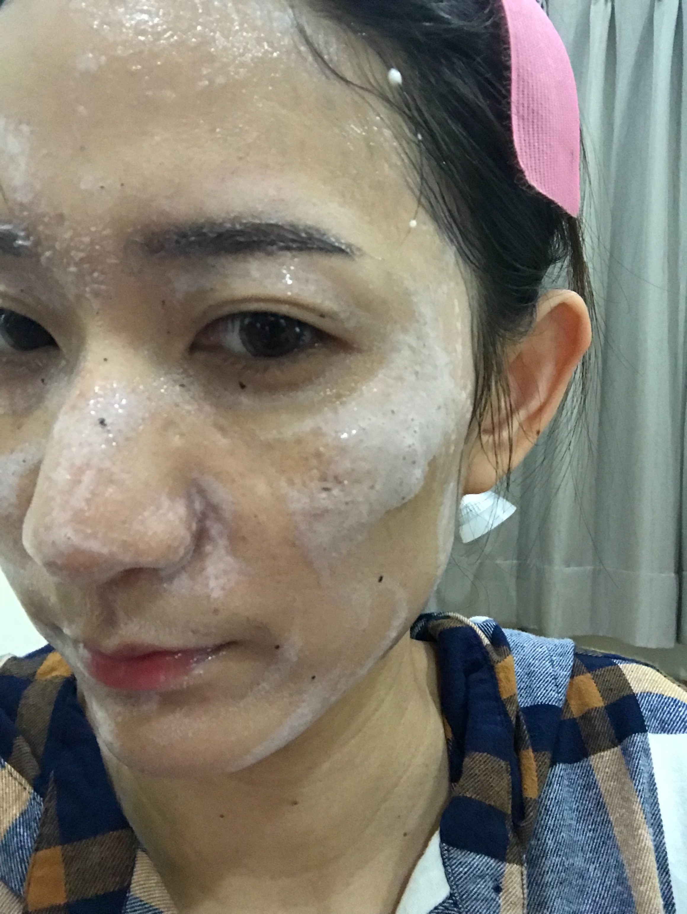

| BEFORE(2019/01/07) | AFTER(2019/01/14) |
|---|
| BEFORE(2019/01/07) | AFTER(2019/01/14) |
|---|
Ｈｉ～各位鄉親大家好
今天想來分享全美－皙之密保養品，不知道你們是不是跟我一樣對保養品用到好用就會一直用。
除非遇到更好的不然不會換，對，就是這麼忠（ㄌㄢˇ）誠（ㄉㄨㄛˋ）
我的膚質：
先說我的膚質是偏乾的中性，有時候換季會出現乾癢或起小疹子。
以往使用的保養品：
我之前都是用理膚寶水噴霧加上B15乳液或是雅樣舒敏乳液。
所以我姐姐給我用一次皙之密之後，礙於價錢跟我之前開架的保養品有點差距，我還是用完我原本的保養品。
原先其實沒有特別覺得明顯差別，只是覺得臉的皮膚比較細，但我也沒特別在意。
使用感覺：
使用之後，殊不知，當我用回我原本的保養品，居然開始懷念皙之密了（思念總在分手後？！）。
除了皮膚的細緻度之外，我還感覺到了下午我的臉明顯比較乾，
但我現在臉比較乾就算了，畢竟我是一個保養品可以用很久的人，
我不想等老了才發現原來我的保養品不夠保濕，所以我又自掏腰包撒錢再用回皙之密。
使用過程遇到情況：
剛開始使用會有一點發紅，一點刺癢，差不多持續２周才完全沒感覺。
中間還有一度臉反黑，有一種越擦越黑的感覺，但這個情況大約１個月之後就有好轉，
現在就是恢復正常的顏色。
以下說明如何使用：
1. 產品說明：
- 1號(洗臉): 擠大約5元硬幣大小 起泡後 再洗臉 質地:有點像是蘆薈膠的質地
- 2號(化妝水): 直接倒臉上 至全臉濕 質地:介於一般水狀質地跟dr.wu的保濕化妝水中間
- 3號(代謝皮膚):早2滴/ 晚4滴 質地:水狀,會因接觸空氣變成深色
- 4號(增加養分):早2下/ 晚2下 (3號跟4號在手心混合後上臉) 質地:乳霜狀,但不黏膩
- 6號(修護,保濕)&:2下 質地較厚 會白白的正常 質地:明顯感覺較滋潤的乳液,在臉上會有白白的感覺,但過一陣子就會消失
- 7號(美白/刺激膠原蛋白):5滴 質地:油水混合,但不油膩
- 8號(毛孔疏通):有需要可以增加在洗臉之後擦,會有點刺激 質地:水狀,在臉上初期會有些刺激,但效果很好
- 9號(緊緻毛孔&舒緩):2下 質地:凝膠質地,但很水,不會停留 2. 我的使用方式：
- 洗臉:先把手洗乾淨>然後手心起泡後按摩臉部>洗淨
- 保養品順序:8(如果想要除粉刺)>2>7>3>4>9>5(早上,並扣掉3&7)
因為我的化妝品都不是非常持久或是防水難卸的,通常我都直接用皙之密洗面霜洗2次,但如果你擔心洗不乾淨 或是你的彩妝品是難卸除的,我覺得還是需要先用專用的卸妝先卸除再用皙之密洗面霜洗一次喔~ 我這張照片是我第一次卸妝洗臉,滿臉都是眼線是怎麼回事(哈哈哈哈哈哈~~~) 
最後來一張保養品全素顏零美肌照片(哈哈)
眉毛是去霧的不要懷疑
美中不足當然還是養了20年的雀斑
最後來個總評分:
價位: ★★☆☆☆ 我覺得如過有再用專櫃保養品根本無感,但我是用開價
保濕度:★★★★★
效果:★★★★★
包裝(?):★★★☆☆ 基本上我不太在意,簡單的顏色我就很喜歡了
總分當然是高分的,畢竟我自己就是愛用者。
以上參考囉！想知道有關產品及經營更多的事情，可以加K&D line好友
 詢問！
詢問！
| Home | BWL | COOKING | DIET |